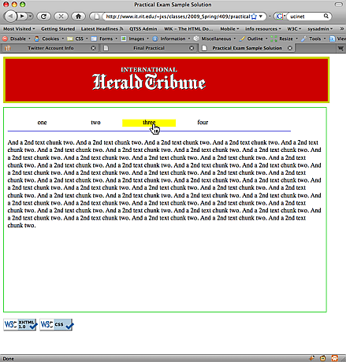

409 / 737 Practice Practical Exam
Overview
You will need to complete the following within a 1-hour 40 minute period. You will be setting up a template for a simple online newspaper. See below for a screen snapshot of a sample-solution. Your web-page display will have the following high-level structure:
- A masthead area at the top displaying this International Herald Tribune graphic.
- A lower area containing:
- A table of contents area across the page and below the masthead area
- A content area below the table of contents and the masthead area
{kind=link}
Details
The masthead area should contain the graphic (see above), have a border set to a yellow web-safe non-default color (not just "yellow"), have a red web-safe background color (not just "red"), and be aligned to the center of it's enclosing box. The enclosing box should be set to a width of 800 pixels and be padded by 10 pixels.
The lower area should have a margin placing it 10 pixels below the masthead area. It should be 800 pixels wide, 500 pixels tall, have a border set to a non-default green web-safe color (not just "green"), and be padded by 10 pixels. The table of contents area and the content area should be within the lower area.
The table of contents area should be 90 percent of the width, have a bottom border set to a non-default blue web-safe color (not just "blue"), have top and bottom margins of 10 pixels, extend across the top of the page, and be above the content area.
The content area should have a top margin and padding at the top of 10 pixels, and should be below the table of contents area.
The table of contents area should contain a list of four choices. Each choice should change to a non-default yellow (not just "yellow") background color and to using the "hand" cursor upon mouseover, and each choice should change to the default background color and cursor upon mouseout. You must use JavaScript to accomplish this.
The content area should contain four chunks of text, all positioned to the same location. Clicking on a choice in the table of contents area should reveal the appropriate new chunk of text in the content area and make all other chunks of text disappear. You must use JavaScript to accomplish this.
When the page first loads, the first of the four text chunks should display in the content area. You may make up your own chunks of text or you may grab random text from anywhere, your choice. Remember: four different chunks, so 1 of 4 things shows at a time.
The navigation list in the table of contents area should have no "bullets" or other marker graphics for the list items, and it should use padding and margins of 10 pixels.
Notes:
- Use:
- XHTML 1.0 (Strict) or HTML 5 (Strict)
- CSS 2.1 or CSS 3
- The XHTML/HTML5 file must be purely XHTML/HTML5 (CSS and JavaScript go into their own files)
- The XHTML/HTML5, CSS, and Javascript must all be valid and well-formed.
- You may use any of the approaches to hiding/revealing information which we have gone over in this class: manipulating the visibility attribute, changing the z-order, and so on.
Post the results to a new directory in your account on gibson. The resulting file should be the default file which loads when I send a browser to the following URI:
- Undergraduates (409): http://people.rit.edu/~yourID/409/winterPracticePractical/
- Graduates (737): http://people.rit.edu/~yourID/737/wihnterPracticePractical/
Of course, the CSS and XHTML/HTML5 must pass testing by the validators at W3C.
Sample solution screen snapshot
